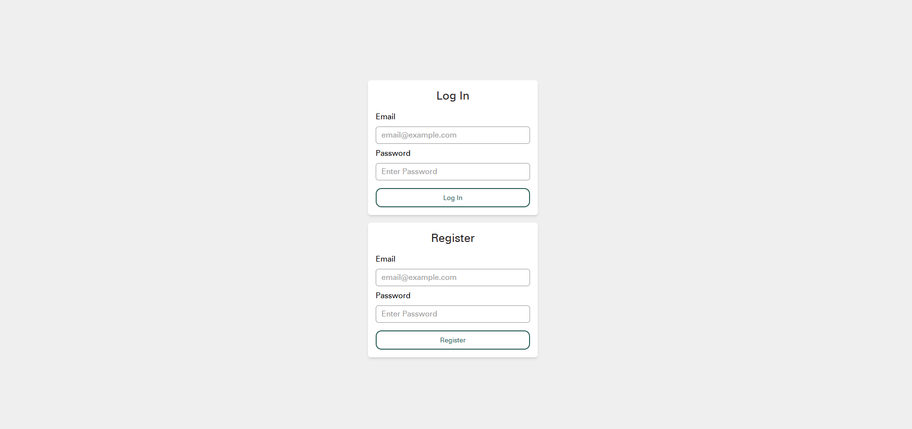
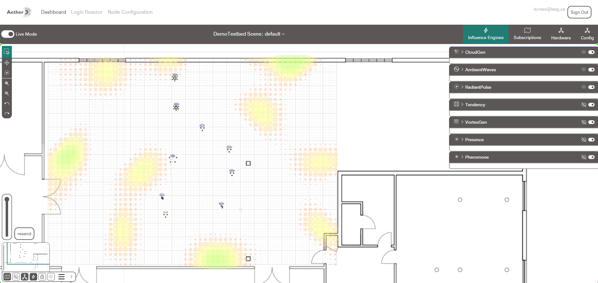
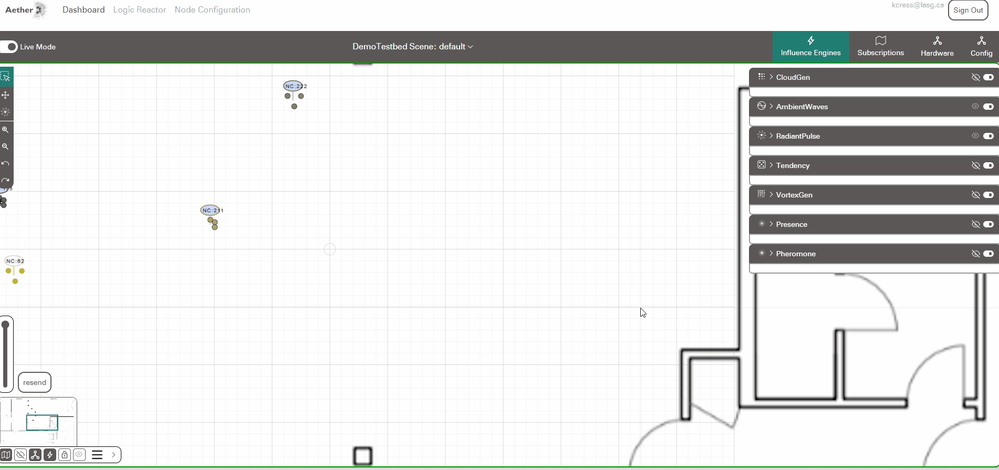
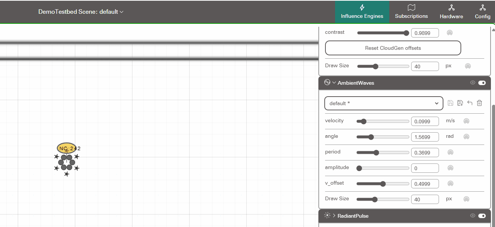
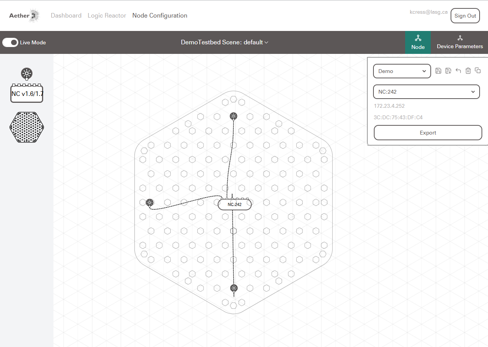
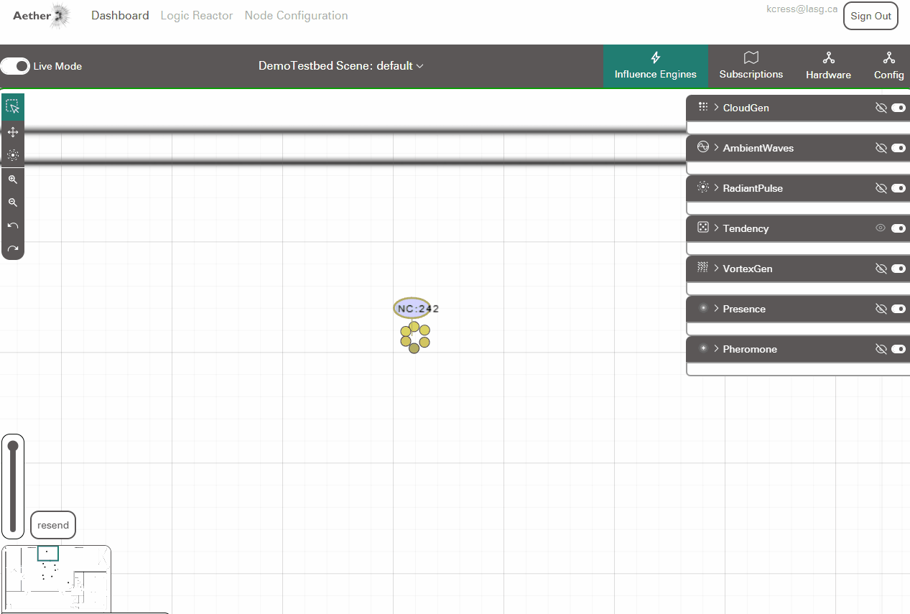
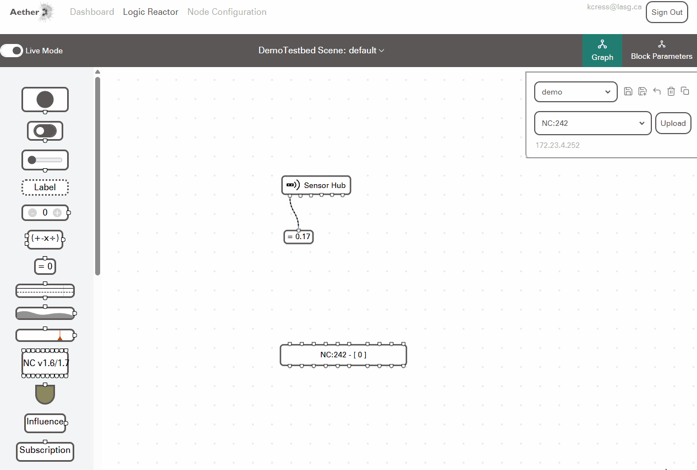
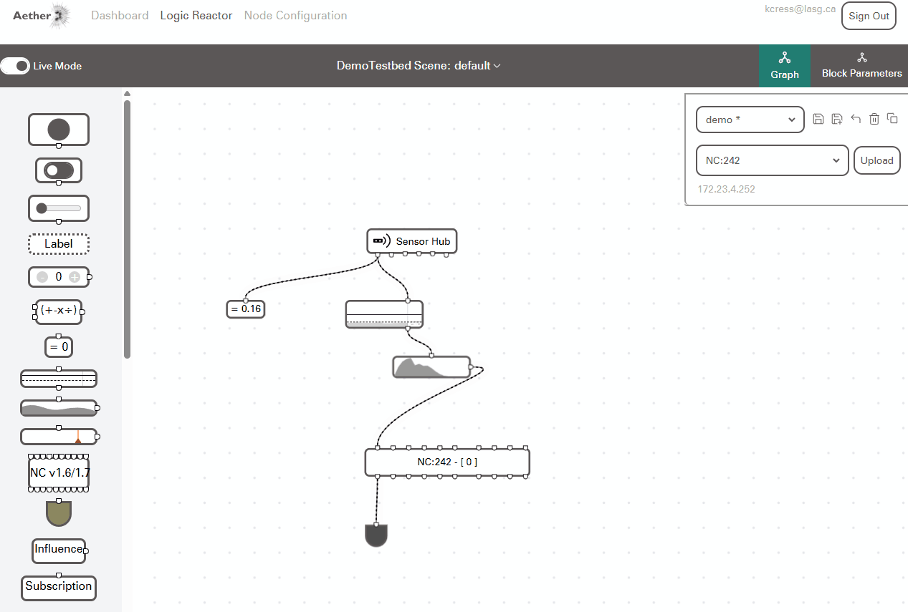
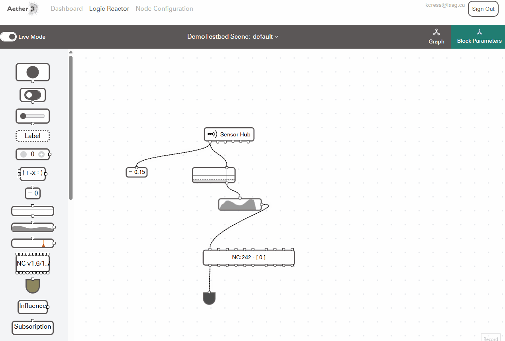

Getting Started with Aether¶
This guide walks through the basic operation of Aether's Dashboard, Node Configuration, and Logic Reactor, to setup a device with simple responsive behaviour.
Setup from Scratch
If you are setting up Aether from scratch, please see the Server Setup and Node Controller Setup pages.
If you are participating in a workshop or working with an existing Testbed then a Server and set of Node Controllers will already be in place.
Accessing Aether Web UI¶
To access Aethers web interfaces, connect a computer or laptop to the "Aether-Local" Wifi network, open Google Chrome web browser and enter the following in the address bar 172.23.4.1:3022
This will bring you to the Aether Log-In page:

From this page you can log in, if you have previously registered an account with this server, or Register a new account.
Aether's Dashboard¶
After logging in or registering you will have access to Aethers web interface. The first page you will see is Aether's Dashboard.

Aether's Dashboard allows you to manage the arrangement of Node Controllers, Devices that Aether can interact with, as well as the parameters of Influence Engines, weather-like environmental algorithms that impact each devices behaviour.
Connecting and Positioning New Node Controllers.¶
Once a new device is powered on and connects to the Aether Server, it will be added to the origin point of the dashboard. Once the Node Controller appears in the dashboard, it can be dragged and dropped into the desired position.

if you can't drag and drop to move Node Controllers, make sure that the "Lock Positions" toggle in unchecked in the bottom left settings bar

Subscribing to an Influence Engine¶
To test that your new device is communicating with Aether, we will try subscribing it to the Ambient Waves Influence Engine. Subscribing a device to an influence engine allows it to be sensitive to, and respond to, changes in that Influence Engine.


To read more about the variety of Influence Engines available with Aether, see the Influence Engines Section of the documentation.
Configuring a Node Controller¶
A Node Controllers configuration and placement of Actuators in Aether should accurately reflect the physical layout of actuators in the real world. To arrange and configure a Node Controller, we can use the Node Configuration Editor

In the Node Configuration Editor you can drag and drop components from the left side menu to create an arrangement of actuators, and connect those actuators to a Node Controller. To configure a Node controller:
1) Make note of the Node Controllers ID number in the Dashboard.
2) Go to the Node Configuration page,
3) Select the Node ID in the Select NC Dropdown
4) Drag and Drop a Node Controller block into the workspace.
5) Drag and Drop Devices into the workspace
- Device parameters, such as the devices type, can be configured in the Device Parameters side menu
6) Connect each device to the desired port on the Node Controller Block
7) Use the export button to export the configuration for this Node Controller to the Database

Behaviour Logic¶
So far we have setup a Node Controller to react passively to the external Influence Engine algorithms. To create more complete behaviors, we can use the Logic Reactor editor to create internal behaviours for a Node Controller. The Logic Reactor is also where we can configure which sensors are connected to a Node Controller, and how those sensor inputs are used.
The Logic editior is a visual scripting environment where logic blocks can be chained together to create complex behaviour. A block may have inputs (located on their top or left sides), outputs (located on their right or bottom sides), as well as some parameters (located in the block parameter side menu).
In this getting started guide we will configure the logic editor take sensor input from the Sensor Expansion hub, and use that sensor input to trigger a cascading set of lights. For a more comprehensive list of Logic Blocks and their functionality, see the Logic Reactor page of the documentation.
To configure a sensor to trigger outputs on a Node Controller:
Testing Sensor Input¶
-
Ensure the node controller is powered on, with an IR Sensor plugged into the first port of the Sensor Expansion Hub
-
Make note of the Node Controllers ID number in the Dashboard.
-
Go to the Logic Reactor page,
-
Select the Node ID in the
Select NCDropdown -
Save a preset with a name of your choice
-
Drag and Drop a Node Controller block into the workspace.
-
Drag and Drop a Sensor Hub block into the workspace
-
Drag a Number Output block into the workspace
-
Connect the first port of the sensor hub to the Number output block
-
Check that the output value changes when you move your hand in front of the sensor

Note
If you aren't seeing output from the Sensor Hub, make sure you have the correct Node Controller selected, and try hitting the upload button. If the block still isn't responding, try hitting the Reset TCP button in the Hardware -> Troubleshooting Tools menu on the dashboard.
Setup a Basic Trigger¶
-
Drag a Trigger Threshold block into the workspace.
-
Drag a Sequence Playback block into the workspace.
-
Connect the first output of the Sensor Hub to the input of the Trigger Threshold Block,
-
Connect the output of the Trigger Threshold block to the input of the Sequence Playback block.
-
Connect the Output of the Sequence Playback block to the first input of the NC block.
-
Add a Level Visualizer and connect it to the first output of the NC block
Moving your hand in front of the sensor should now cause the first Actuator of the Node Controller to playback a sequence.

Editing Sequences¶
You can edit the sequences used in the Sequence Playback block by going to the Block Parameters menu and selecting the Edit Sequence button

Cascading Sequences¶
You can create a cascade of sequences by using the Propagation block to offset the playback of multiple sequences.

Using Virtual Inputs¶
If your prototyping behaviour without a Node Controller connected, you can use the Virtual Input Buttons to simulate Sensor inputs

Try combining logic blocks in unique ways to see what kinds of behaviour you can create.